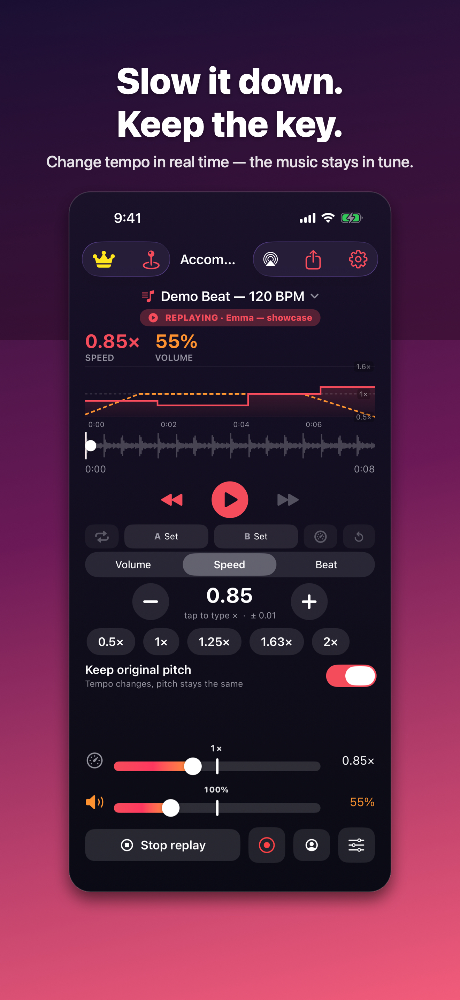

Choose one class song.
In the Library, open Add music, then Add files. Choose a playable audio file in Files. Tap the song. If playback does not start, press Play.
FOR DANCERS & DANCE TEACHERS
Slow a passage. Repeat the hard part. Bring the music back to performance speed when your dancers are ready.
Use audio files you can open in Files on your iPhone or iPad. No file ready? Try the built-in demo first.
Get Accompanist on the App Store
Free to download. Free live controls with banner ads; optional Pro subscription. iOS 17 or later. Spotify and Apple Music subscription streams are not supported.
See your first rehearsal
START WITH ONE SONG
In the Library, open Add music, then Add files. Choose a playable audio file in Files. Tap the song. If playback does not start, press Play.
Use the speed bar, presets or an exact typed value. Keep pitch lock on to change tempo while keeping the original key.
Set A and B around the passage, then turn on the loop. Return to 1× speed when you want another run at the original tempo.
BUILD TOWARD FULL SPEED
The free Speed Trainer can increase the tempo on successive loops. Choose the passage and pace that fit the rehearsal.
This short, silent demonstration shows the loop repeating and the displayed speed increasing. It does not play music or demonstrate sound quality.
Demo description: a short section repeats between A and B. The speed display rises from 0.60× through 0.65×, 0.70× and 0.80×.
The free version includes banner ads.
Record your speed and volume adjustments as a song plays. Save a named routine, then replay or edit it for the next run-through.
Monthly and yearly subscriptions. The purchase screen shows your regional price and billing terms. Subscriptions renew automatically until cancelled; manage them in your App Store account.
Recording a routine means recording control changes, not microphone audio. A shared profile needs the same song on the receiving device. Shared folders and music sync are separate Pro features.
No. Bring a playable audio file you can access in Files, such as a compatible purchased download or your own recording. Accompanist does not include a music catalogue and cannot play subscription streams or DRM-protected files.
No. Importing audio, changing speed and volume, looping a passage and using the rhythm tools are free. Pro is optional for saved routine replay and the additional features listed above.
Check Count me in and Metronome in the Beat controls. Count me in adds beats before playback; the metronome clicks along with the music. You can turn each off separately.
Open the song and play the passage through your intended speaker or headphones. Check your speed, app volume, phone volume, count-in, metronome and any selected saved routine. Keep your original music files separately.
Read the Accompanist support guide or email mwsupplylimited@gmail.com. Include your app version, device, iOS version and the steps you took. Please do not send student details or music files.
Get Accompanist on the App Store
For iPhone and iPad, with an Apple Watch playback remote.